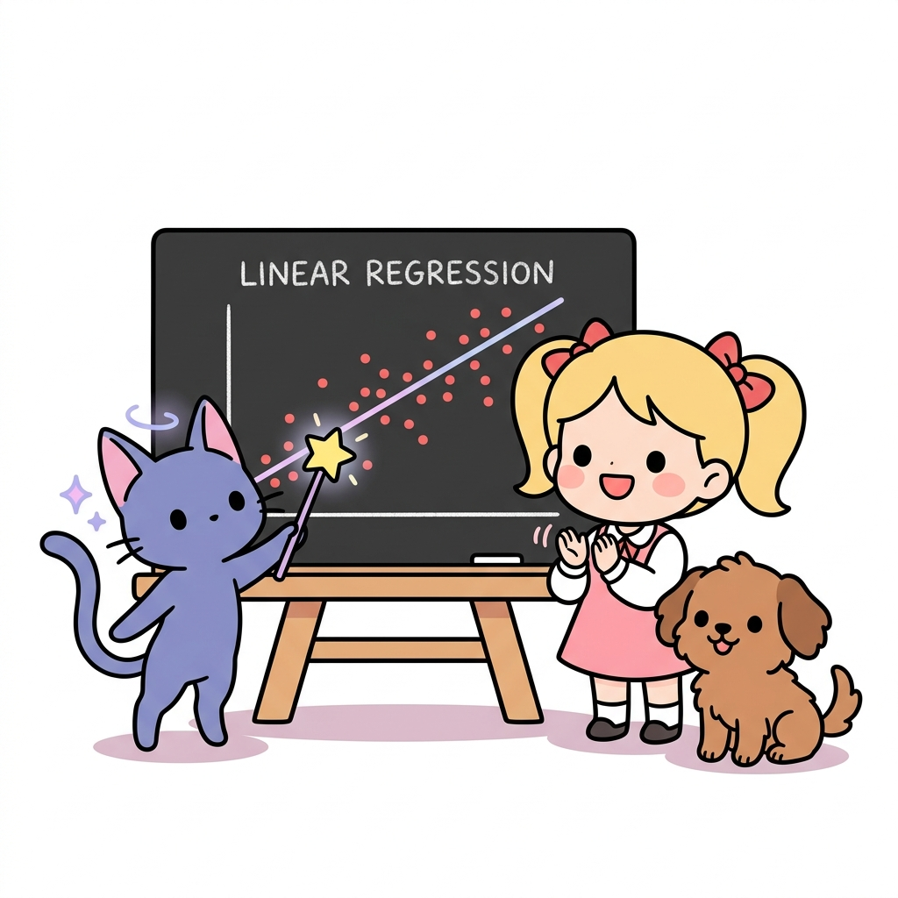
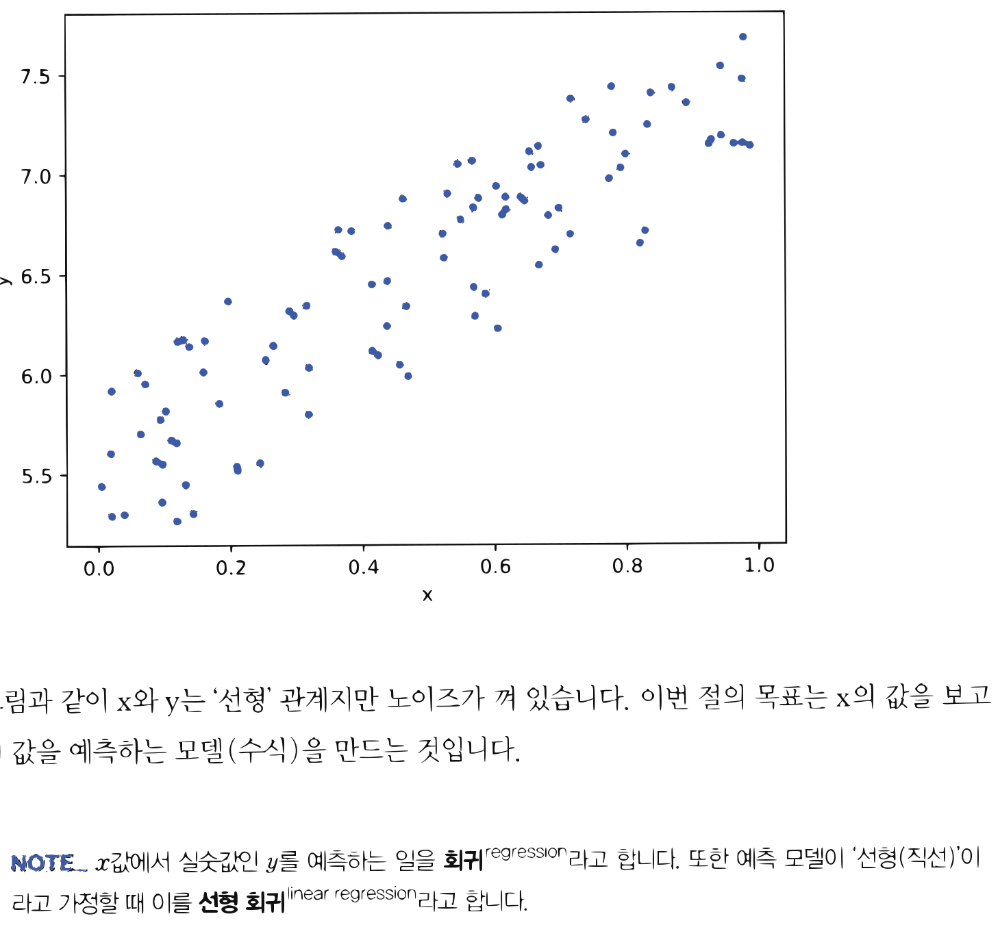
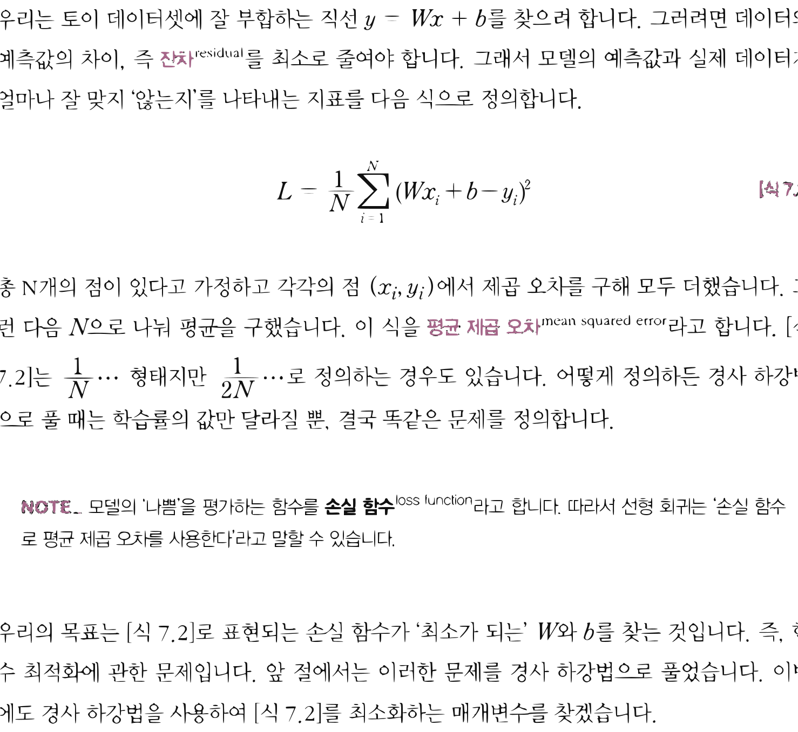
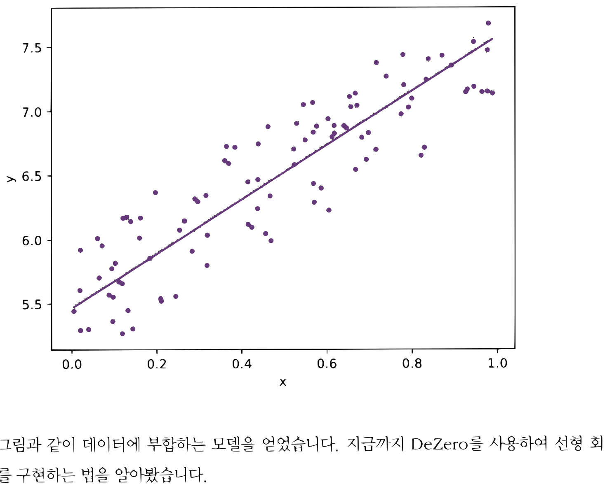

11.2 선형 회귀
그림 11-2 칠판 위에 흩뿌려진 빨간색 경험 데이터 점들을 관통하는 완벽한 예측 직선을 요술 지팡이로 그려보이는 지니와 도로시

머신러닝의 주춧돌이자 수많은 인공지능 예측의 뿌리가 되는 선형 회귀(Linear Regression) 이론을 공부합니다. 연속적인 데이터 점들의 분포를 가장 정확하게 설명해주는 직선 수식($y = wx + b$)의 평균제곱오차(MSE) 손실을 정의하고, 경사하강법(Gradient Descent) 마법을 통해 최적의 매개변수를 수렴시켜 나가는 과정을 지니와 함께 재미있게 배워봅시다!
머신러닝은 ‘데이터’를 이용해 문제를 해결합니다. 문제 해결 방법을 사람이 생각하는 게 아니라, 수집된 ‘데이터’를 보고 컴퓨터가 발견(학습)해내는 것입니다. 이처럼 ‘데이터’에서 해결책을 찾는 것이 머신러닝의 본질입니다. 이번 절에서는 DeZero를 이용해 머신러닝 문제를 풀어보겠습니다. 그 첫걸음으로 머신러닝에서 가장 기본이 되는 ‘선형 회귀’를 구현해보겠습니다.
11.2.1 토이 데이터셋
먼저 실험용으로 작은 데이터셋을 만들겠습니다. 실험용의 작은 데이터셋을 토이 데이터셋toy dataset이라고 합니다. 그리고 문제를 언제든 똑같이 재현할 수 있도록 데이터 생성용 난수 발생기의 시드를 고정하겠습니다.
import numpy as np
np.random.seed(0) # 시드 고정
x = np.random.rand(100, 1)
y = 5 + 2 * x + np.random.rand(100, 1)
이와 같이 x와 y, 두 개의 변수로 구성된 데이터셋을 만들었습니다. x와 y를 2차원상의 점 위치라고 해보죠. 그러면 데이터셋을 구성하는 점들은 직선상에 있되 y에는 난수가 노이즈로 추가된 형태가 됩니다(그림 11-5).
그림 11-5 노이즈가 포함된 데이터셋

그림과 같이 x와 y는 ‘선형’ 관계지만 노이즈가 껴 있습니다. 이번 절의 목표는 x의 값을 보고 y의 값을 예측하는 모델(수식)을 만드는 것입니다.
[!NOTE] x값에서 실숫값인 y를 예측하는 일을 회귀regression라고 합니다. 또한 예측 모델이 ‘선형(직선)’이라고 가정할 때 이를 선형 회귀linear regression라고 합니다.
11.2.2 선형 회귀 이론
지금 목표는 주어진 데이터로부터 결과를 잘 맞히는 함수를 찾는 것입니다. 여기서는 $y$와 x가 선형 관계라고 가정하기 때문에 그 함수를 식 $y = Wx + b$로 표현할 수 있습니다($W$는 스칼라). 식 $y = Wx + b$는 직선이며 [그림 11-6]처럼 표현됩니다.
그림 11-6 선형 회귀의 예

예측값(모델) 잔차 데이터우리는 토이 데이터셋에 잘 부합하는 직선 $y = Wx + b$를 찾으려 합니다. 그러려면 데이터와 예측값의 차이, 즉 잔차residual를 최소로 줄여야 합니다. 그래서 모델의 예측값과 실제 데이터가 얼마나 잘 맞지 ‘않는지’를 나타내는 지표를 다음 식으로 정의합니다.
\(L = \frac{1}{N} \sum_{i=1}^N (W x_i + b - y_i)^2\) [식 8.2]
총 N개의 점이 있다고 가정하고 각각의 점 $(x_i, y_i)$에서 제곱 오차를 구해 모두 더했습니다. 그런 다음 $N$으로 나눠 평균을 구했습니다. 이 식을 평균 제곱 오차mean squared error라고 합니다. [식 8.2]는 $\frac{1}{N} \dots$ 형태지만 $\frac{1}{2N} \dots$로 정의하는 경우도 있습니다. 어떻게 정의하든 경사 하강법으로 풀 때는 학습률의 값만 달라질 뿐, 결국 똑같은 문제를 정의합니다.
[!NOTE] 모델의 ‘나쁨’을 평가하는 함수를 손실 함수loss function라고 합니다. 따라서 선형 회귀는 ‘손실 함수로 평균 제곱 오차를 사용한다’라고 말할 수 있습니다.
우리의 목표는 [식 8.2]로 표현되는 손실 함수가 ‘최소가 되는’ $W$와 $b$를 찾는 것입니다. 즉, 함수 최적화에 관한 문제입니다. 앞 절에서는 이러한 문제를 경사 하강법으로 풀었습니다. 이번에도 경사 하강법을 사용하여 [식 8.2]를 최소화하는 매개변수를 찾겠습니다.
11.2.3 선형 회귀 구현
이제 DeZero를 사용하여 선형 회귀를 구현하겠습니다. 먼저 전반부의 코드를 보시죠.
import numpy as np
from dezero import Variable
import dezero.functions as F
# 토이 데이터셋
np.random.seed(0)
x = np.random.rand(100, 1)
y = 5 + 2 * x + np.random.rand(100, 1)
x, y = Variable(x), Variable(y) # 생략 가능
# 매개변수 정의
W = Variable(np.zeros((1, 1)))
b = Variable(np.zeros(1))
# 예측 함수
def predict(x):
y = F.matmul(x, W) + b # 행렬 곱으로 여러 데이터 일괄 계산
return y
매개변수인 W와 b를 Variable 인스턴스로 생성합니다(W는 대문자). W의 형상은 $(1, 1)$이고 b의 형상은 $(1,)$입니다. 또한 이 코드에서는 predict() 함수를 정의했습니다. 여기서 행렬을 곱해주는 matmul() 함수를 사용하여 계산을 수행합니다. 행렬 곱을 이용하면 여러 데이터를(예제 코드에서는 100개의 데이터) 일괄로 계산할 수 있습니다. 일괄 계산 시 형상은 [그림 11-7]처럼 변화됩니다.
그림 11-7 행렬 곱 연산 시 형상 변화(b는 생략)
$\quad\quad x \quad\quad W \quad = \quad y$ 형상: $(100, 1) \quad (1, 1) \quad\quad (100, 1)$
[그림 11-7]과 같이 대응하는 차원의 원소 수가 일치함을 알 수 있습니다. 그리고 결과인 y의 형상은 $(100, 1)$이 됩니다. 즉, 데이터가 100개인 x의 원소 각각에 W를 곱한 것입니다. 이런 식으로 단 한 번의 계산으로 모든 데이터의 예측값을 구할 수 있습니다. 지금 예에서의 x는
1차원 데이터입니다. 만약 차원 수가 D인 경우에도 W의 형상을 (D, 1)로 바꿔주기만 하면 됩니다. 예를 들어 D=4라면 [그림 11-8]과 같은 계산이 이루어집니다.
그림 11-8 행렬 곱의 형상 변화(x가 4차원 데이터인 경우)
$x \quad W \quad = \quad y$ $(100, 4) \quad (4, 1) \quad\quad (100, 1)$
[그림 11-8]과 같이 x.shape[1]과 W.shape[0]의 원소 수를 일치시키면 행렬 곱이 올바르게 계산됩니다. 즉, 100개의 데이터 각각에 대해 W와의 ‘내적’ 계산이 이루어집니다.
다음은 후반부 코드입니다.
# 평균 제곱 오차(식 7.2) 계산 함수
def mean_squared_error(x0, x1):
diff = x0 - x1
return F.sum(diff ** 2) / len(diff)
# 경사 하강법으로 매개변수 갱신
lr = 0.1
iters = 100
for i in range(iters):
y_pred = predict(x)
loss = mean_squared_error(y, y_pred)
# 또는 loss = F.mean_squared_error(y, y_pred)
W.cleargrad()
b.cleargrad()
loss.backward()
W.data -= lr * W.grad.data
b.data -= lr * b.grad.data
if i % 10 == 0: # 10회 반복마다 출력
print(loss.data)
print('====')
print('W =', W.data)
print('b =', b.data)
출력 결과
42.296340129442335
0.24915731977561134
0.10078974954301652
0.09461859803040694
0.0902667138137311
0.08694585483964615
0.08441084206493275
0.08247571022229121
0.08099850454041051
0.07987086218625004
====
W = [[2.11807369]]
b = [5.46608905]
mean_squared_error(x0, x1)은 평균 제곱 오차를 구하는 함수로, DeZero의 함수를 이용하여 [식 8.2]를 구현했습니다.
그리고 경사 하강법으로 매개변수를 갱신했습니다. 참고로 DeZero가 제공하는 평균 제곱 오차 함수인 F.mean_squared_error()를 사용해도 됩니다.
이제 코드를 실행해봅시다. 그러면 손실 함수의 출력값이 줄어드는 모습을 볼 수 있습니다. 그리고 최종적으로 $\mathrm{W} = [[2.11807369]], \mathrm{b} = [5.46608905]$라는 값을 얻을 수 있습니다. 참고로 W와 b를 이 값으로 설정한 직선 그래프는 [그림 11-9]와 같습니다.
그림 11-9 학습 후 모델

그림과 같이 데이터에 부합하는 모델을 얻었습니다. 지금까지 DeZero를 사용하여 선형 회귀를 구현하는 법을 알아봤습니다.